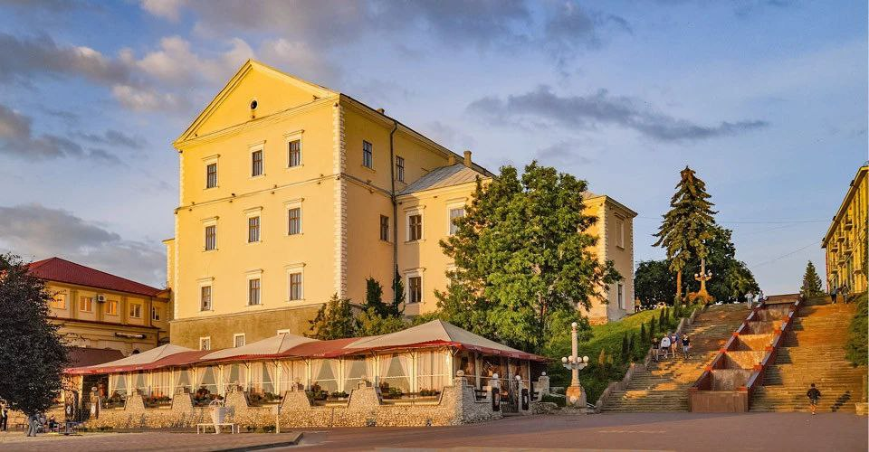
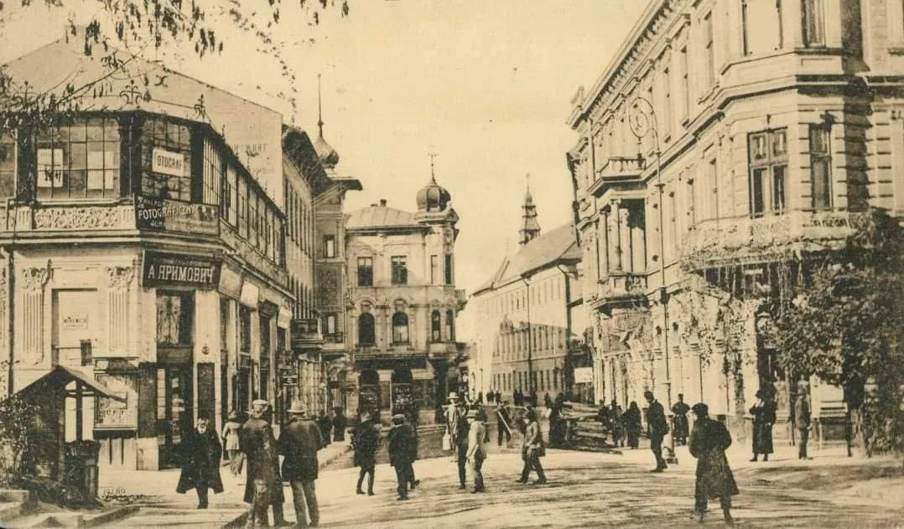
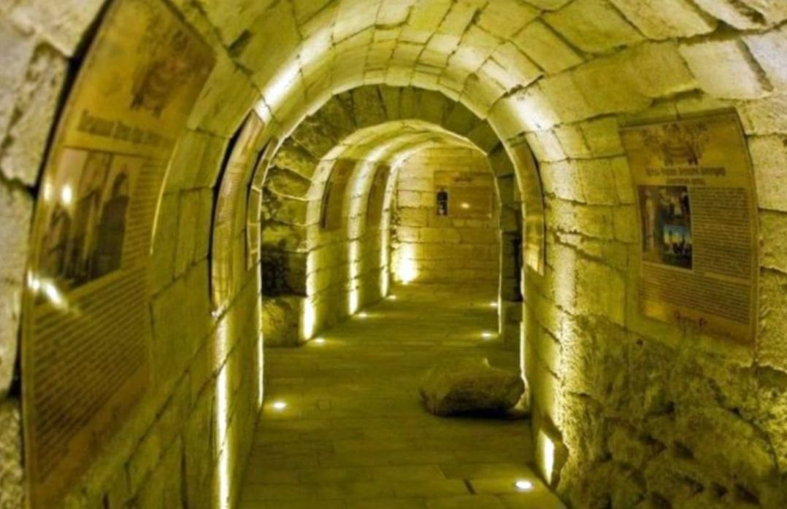
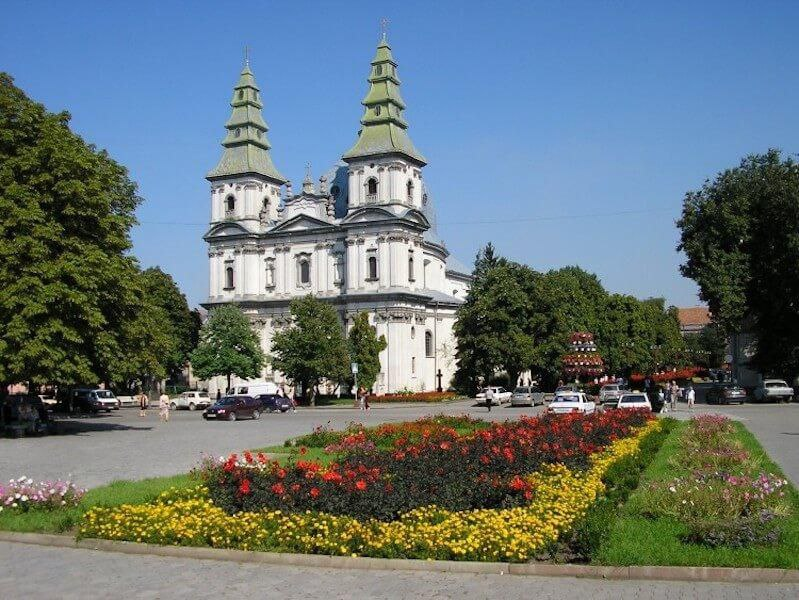
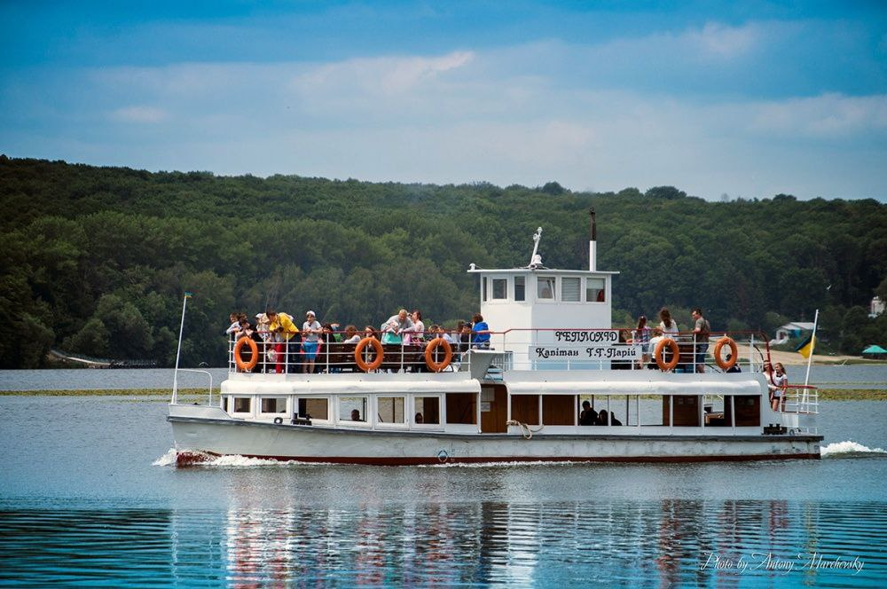
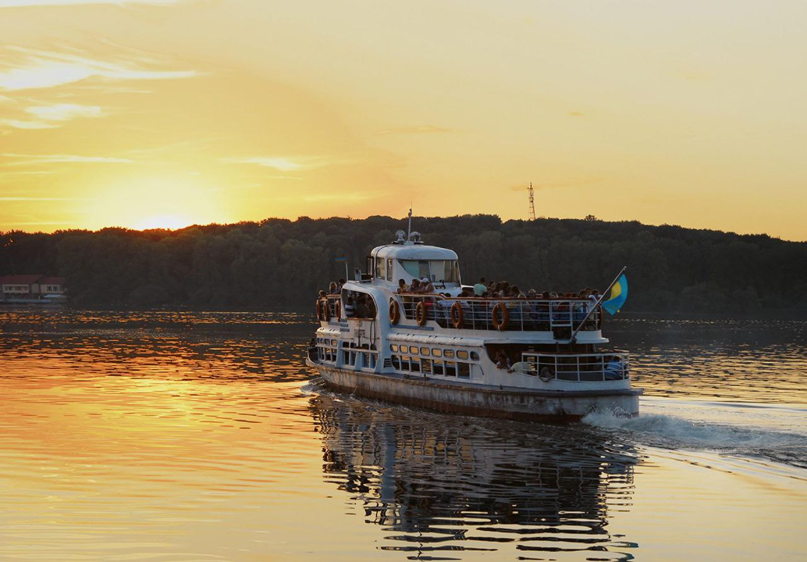

Приїхавши до Тернополя, ви зрозумієте: це не просто місто для прогулянок, а місце, яке має душу. І найкращий спосіб її відчути — вирушити в екскурсію!
Тернопіль — місто, яке вміє закохувати з першого погляду. Його називають перлиною Західної України — тихе, затишне й водночас сповнене життя. Тут гармонійно поєдналися давнина і сучасність, історія і романтика, кам’яні вулиці й зелені парки. Сьогодні у Тернополі проводять різноманітні екскурсії, які допомагають відчути справжній дух міста:
Оглядова екскурсія “Старе місто” — знайомство з історичним центром, давнім замком, пам’ятками архітектури та легендами, що оживають на вуличках біля ставу.


“Духовний Тернопіль” — маршрут святинями міста: величними храмами, костелами, монастирями, де зберігаються ікони та реліквії кількох століть.


Прогулянка на катері Тернопільським ставом — одна з найромантичніших подій у місті. Вечірні вогні, свіже повітря й відображення храмів у воді створюють справжню магію.

